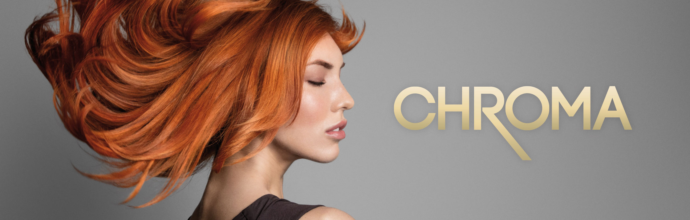
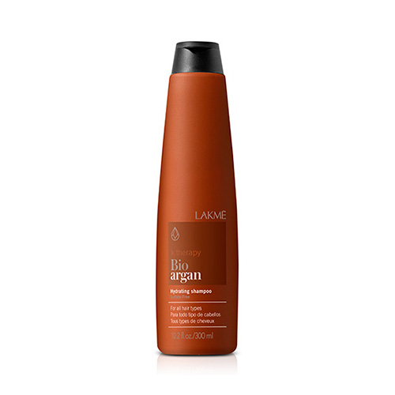
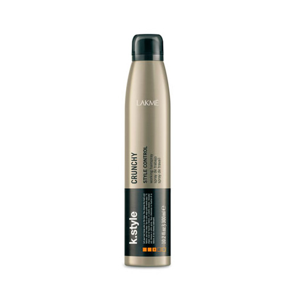
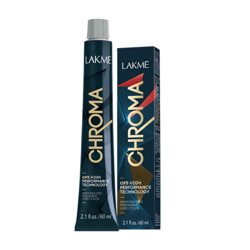

La marca creada por los estilistas para los Estilistas
Lakmé es un aliado de los estilistas: les proporciona herramientas para que saquen lo mejor
de ellos.
Herramientas que se traducen en productos de calidad incuestionada porque la eficacia es la
clave
del éxito y la confianza mútua.
ATRÉVETE CON GLOSS, NUESTRA COLORACIÓN DEMI-PERMANENTE, SIN AMONÍACO
Personaliza tu cabello con la coloración demi-permanente tono sobre tono de Lakmé. Intensifica
el
color natural con reflejos luminosos. Matiza las mechas.

LA COLORACIÓN PERMANENTE SIN AMONÍACO SE REINVENTA
La coloración permanente sin amoníaco CHROMA se reinventa con la tecnología OF5 para alcanzar la
excelencia en cinco puntos clave: Cobertura 100%, brillo puro, larga duración del color, óptimo
confort el cuero cabelludo y suavidad natural.
K.BLONDE, LA NUEVA EXPERIENCIA EN RUBIOS
El rubio es un color que siempre está de moda. Rubios totales, shatush, tiger eye o balayages
son
técnicas que permiten al colorista su máxima expresión de creatividad y personalizar según el
deseo del
cliente.
TEKNIA ES TODO EN UNO: SOSTENIBLE, ORGÁNICA, VEGANA Y ECOLÓGICA
TEKNIA es fusión de la experiencia, la innovación y la inspiración: el mejor ritual de belleza
para
un cabello cuidado, sano y eternamente bello.
PLACER Y BIENESTAR PARA EL CABELLO Y CUERO CABELLUDO
k.therapy es la familia completa de tratamientos LAKMÉ que trata los principales problemas del
cabello y del cuero cabelludo.
LA RESPUESTA PARA CREAR VOLUMEN, BRILLO Y TEXTURAS
Con k.style ya no hay excusas para conseguir los acabados más creativos que marcan tendencia en
cualquier lugar del mundo.
LA EVOLUCIÓN DE LA REVOLUCIÓN PLEX
Los efectos del día a día se ven plasmados en el cabello. La polución, el estrés ambiental, los
tratamientos químicos y las rutinas diarias del cepillado o secado no ayudan a que el cabello
luzca sano
y bello.
TRATAMIENTO VEGANO QUE ALISA, SUAVIZA Y ELIMINA EL ENCRESPADO
AURA es el primer tratamiento capilar biotecnológico con ingredientes orgánicos que alisa,
suaviza
la fibra capilar y elimina el encrespado. Descubre la hialuroplastia, el nuevo servicio de
tratamientos que va más allá del alisado y el control del encrespado..
Lakme Products
Bálsamo ligero de volumen para cabellos finos.
Mascarilla refresh de color para cabellos coloreados.
Acondicionador reparador para cabellos dañados.
Shampoo hidratante para todo tipo de cabellos
Tratamiento protector cabellos coloreados
Sérum protector cabellos estresados.
Shampoo tonalizador para cabellos rubios, con mechas y cabellos
blancos.
Acondicionador para cabellos encrespados.
Concentrado contra caída capilar.
Mascarilla fortificante para cabellos desvitalizados y débiles.
Gel reparador específico para puntas secas y dañadas.

Shampoo hidratante con aceite de argán 100% orgánico..
Mascarilla seborreguladora que normaliza el exceso de secreción
sebácea..
Mascarilla hidratante con aceite de argán 100% orgánico.

Spray con fijación fuerte y flexible
Gel de fijación super fuerte

Coloración permanente sin amoníaco de alto rendimiento
coloración permanente cobertura de canas
Servicio Blonde 360
En verano, un toque de luz en el cabello es clave para realzar el moreno de la piel. Por lo que
la demanda de Babylights, Balayage y tonos rubios aumenta considerablemente durante esta época.
En época de calor, todas queremos lucir el moreno con un toque de luz en el cabello y la demanda
en los salones aumenta.
Los 6 beneficios del tratamiento de alisado Aura
Todas soñamos con un cabello sedoso, texturizado, brillante y sin encrespamiento. Este verano
puedes conseguir el cabello soñado sin plancha con una sola visita al salón.
¿Cómo conseguir una melena de ensueño para 2020??
La calefacción, el aire acondicionado, el uso regular del secador, el uso de gorros y bufandas y
temperaturas extremas pueden debilitar tu cabello.
El mejor look para agregar volumen y profundidad
¿Quieres convertir el aburrido cabello fino en una melena con volumen y personalidad?
Productos veganos & orgánicos
Cuidar el cabello para realzar su estado natural con productos cosméticos naturales y orgánicos
se ha convertido en una filosofía de vida que se extiende cada día más. Muy conscientes de ello,
profesionales y consumidores, huyen de la sofisticación y su ideal es la naturalidad y la
sostenibilidad.
El deseo de encontrar cosméticos 100% veganos, naturales y orgánicos incrementa y abandera un
consumo responsable y ético. El objetivo es encontrar productos exentos de ingredientes de
origen animal, sin siliconas y que sean biodegradables.
üí≠Consejos de expertos.
El cóctel perfecto para cuidar tu cabello decolorado
üí≠Consejos de expertos.
Cuando pienses en color de cabello hay un complemento que no puedes perderte üßñü躂Äç‚ôÄÔ∏èTEKNIA Color
Stay.Perfecto para prolongar las cualidades del color ⏰DISPONIBLE EN FORMATO VIAJE üß≥
Frizz Control – Recupera La Suavidad Del Cabello
El encrespamiento puede combatirse con éxito si los cabellos indomables se tratan con suavidad y
se aplican productos eficaces que aporten hidratación, reparen la fibra y su textura y le
devuelvan su luminosidad y manejabilidad.
La Contaminación Y Los Rayos Uv También Afectan Al Cabello
La contaminación y los rayos UV impactan tanto en la piel como en el cabello. Son las zonas de
nuestro cuerpo más expuestas. Protegemos la piel para evitar daños y el cabello debe recibir la
misma atención porque cuando está desprotegido, se vuelve vulnerable.Lakmé avanza un paso más y
diseña FULL DEFENSE, una línea cuyos productos no sólo protegen el
cabello estresado, sino que actúan de pantalla total preventiva contra los efectos nocivos del
medio.
Aportando un 83% de protección contra las partículas contaminantes y 24% contra UV radicales
libres.
Organic Balance
En casa soy organic thinking. Mi elección es ORGANIC BALANCE porque sus productos contienen hasta
un 99% de ingredientes orgánicos ü§çüçÉüåç